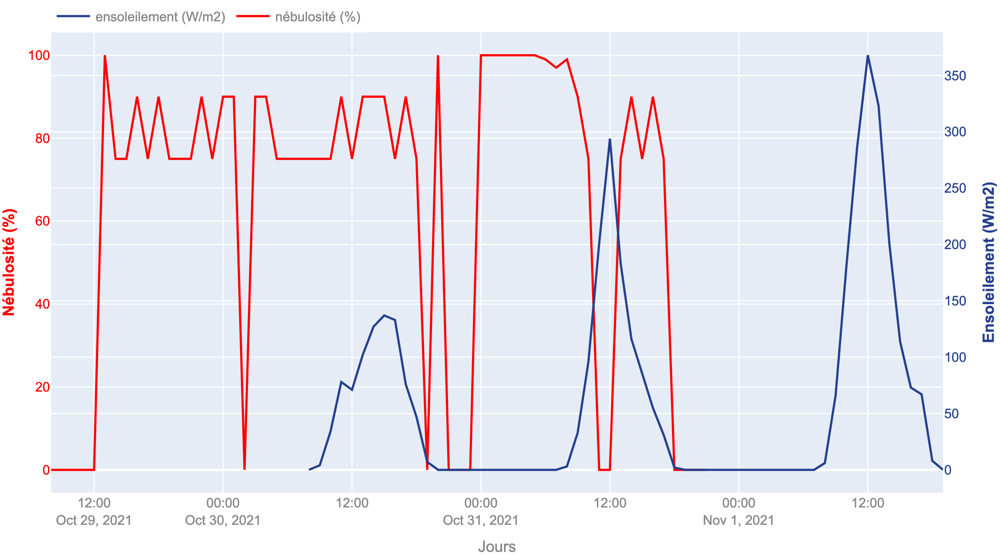

Historique journalier de production (Waldeck)
| Historique journalier de production (Jean Zay)
|
Historique journalier de production (Toutes les centrales)
| |
Historique 30 derniers jours de production (Waldeck)
|
Historique 30 derniers jours de production (Jean Zay)
|
Historique 30 derniers jours de production (Toutes les centrales)
| |
Historique 3 derniers jours de production (Waldeck)
| Historique 3 derniers jours de production (Jean Zay)
|
Historique meteo 3 derniers jours (Waldeck)
| Historique meteo 3 derniers jours (Jean Zay)
 |
Historique depuis le debut archivage (Waldeck)
|
Historique depuis le debut archivage (Jean Zay)
|